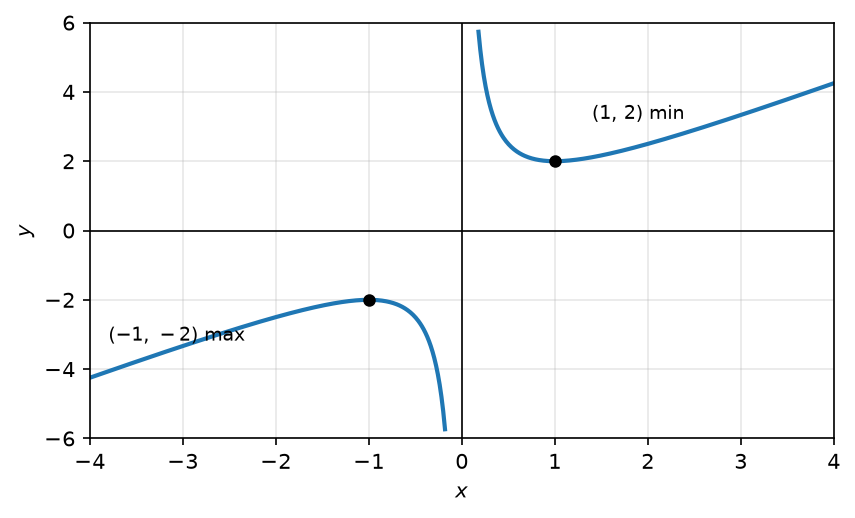
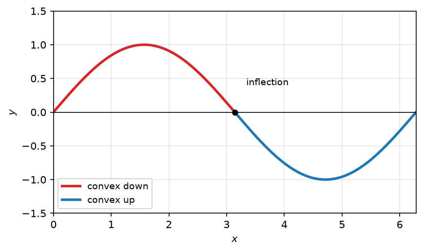
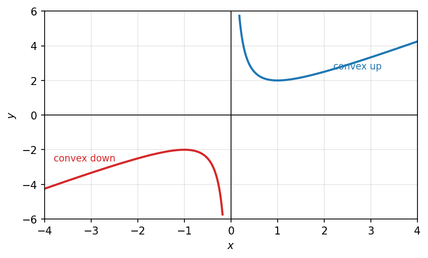
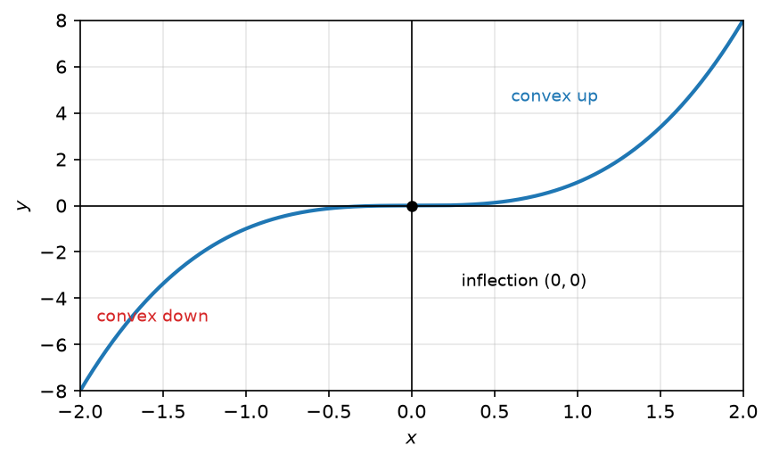
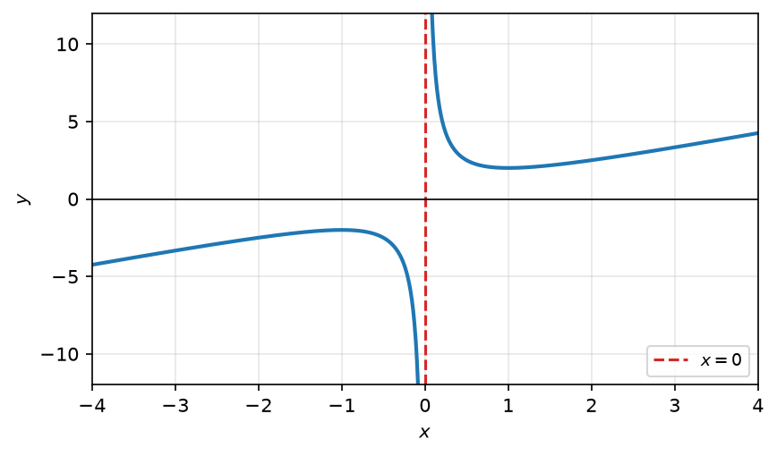
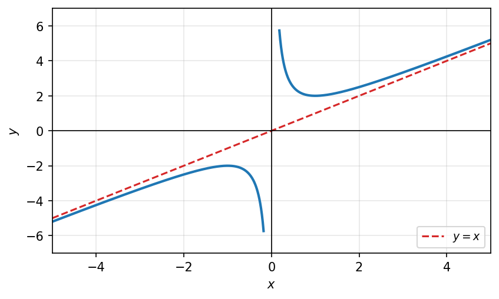

17 נגזרות מסדר גבוה וחקירת פונקציות
17.1 הגדרת הנגזרת מסדר גבוה וסימונים
נגזרת \(f\) מסדר ח מסדר \(x_0\):
\(f\) גזירה ב- \(x_0\)
\(f\) גזירה ב- \(x_0\)
\(f'\) גזירה ב- \(x_0\)
\(\vdots\)
\(((f')'\ldots)'\) גזירה ב- \(x_0\) (ח-1 פעמים)
כלומר: \(f\) גזירה מסדר ראשון \(f\) גזירה ב- \(x_0\)
\(f\) גזירה מסדר שלישי \(f,f',f''\) גזירות ב- \(x_0\)
נסמן: \(f^{(n)}(x) = (\ldots(f')'\ldots)'\) — ח נגזרות (הנגזרת ה-n-ית של \(f\))
לפי המוסכמה:
\[f^{(0)}(x) = f(x)\]
\[f^{(1)}(x) = f'(x)\]
\[f^{(3)}(x) = f'''(x)\]
דוגמאות:
(1) נמצא את \(f^{(n)}(x)\) עבור \(f(x) = e^x\) לכל \(n \geq 0\):
\[f^{(0)}(x) = e^x\]
\[f^{(1)}(x) = e^x\]
\[\vdots\]
\[f^{(n)}(x) = e^x\]
(2) נמצא את \(f^{(n)}(x)\) עבור \(f(x) = \sin(x)\) לכל \(n \geq 0\):
\[f^{(0)}(x) = \sin(x)\]
\[f^{(1)}(x) = \cos(x)\]
\[f^{(2)}(x) = -\sin(x)\]
\[f^{(3)}(x) = -\cos(x)\]
\[f^{(4)}(x) = \sin(x)\]
\[f^{(1)}(x) = f^{(5)}(x)\]
\[\vdots\]
\[f^{(n)}(x) = \begin{cases} \sin(x) & n = 4k \\ \cos(x) & n = 4k+1 \\ -\sin(x) & n = 4k+2 \\ -\cos(x) & n = 4k+3 \end{cases}\]
לדוגמה:
\[f^{(103)}(x) = -\cos(x)\]
(3) נמצא את \(f^{(n)}(x)\) עבור \(f(x) = \ln(1+x)\) לכל \(n \geq 0\):
\[f^{(0)}(x) = \ln(1+x)\]
\[f^{(1)}(x) = \frac{1}{1+x} = (1+x)^{-1}\]
\[f^{(2)}(x) = -(1+x)^{-2} = \frac{-1}{(1+x)^2}\]
\[f^{(3)}(x) = 2\cdot(1+x)^{-3} = \frac{2}{(1+x)^3}\]
\[f^{(4)}(x) = -3\cdot 2\cdot(1+x)^{-4} = \frac{-6}{(1+x)^4}\]
\[\vdots\]
\[f^{(n)}(x) = (-1)^{n+1}\cdot(n-1)!\cdot(1+x)^{-n}\]
\[f^{(n)}(x) = \frac{(-1)^{n+1}\cdot(n-1)!}{(1+x)^n}\]
17.2 דוגמאות לנגזרת מסדר גבוה
דוגמאות לנגזרת מסדר גבוה (\(\sin x,\ e^x,\ xe^x\)) מופיעות בסעיף ״הגדרת הנגזרת מסדר גבוה״ לעיל. להשלמה והפרדה.
17.3 פולינום טיילור ומקלורן
רעיון ראשון - פולינום טיילור
נתונה פונקציה \(f(x)\), ידועות לנו הנגזרות שלה ב- \(x_0\): \(f^{(0)}(x_0), f^{(1)}(x_0), \ldots, f^{(n)}(x_0)\)
נרצה למצוא פונקציה אחרת שהיא מאוד פשוטה (פולינום), נסמנה \(g(x)\), שהיא מסכימה עם \(f\) על הנגזרות ב- \(x_0\).
כלומר:
\[f^{(0)}(x_0) = g^{(0)}(x_0)\]
\[f'(x_0) = g'(x_0)\]
\[\vdots\]
\[f^{(n)}(x_0) = g^{(n)}(x_0)\]
נחפש \(g(x)\) מהצורה:
\[g(x) = a_0 + a_1(x-x_0) + \ldots + a_n(x-x_0)^n\]
כאשר אנחנו עדיין לא יודעים את: \(a_0, a_1, \ldots, a_n\)
נציב \(x = x_0\) ב- \(g(x)\): \(g(x_0) = a_0 \overset{\text{נרצה}}{=} f(x_0)\)
נגזור את \(g(x)\):
\[g^{(1)}(x) = a_1 + 2\cdot a_2(x-x_0) + \ldots + na_n\cdot(x-x_0)^{n-1}\]
נציב \(x = x_0\): \(g^{(1)}(x_0) = a_1 \overset{\text{נרצה}}{=} f'(x_0)\)
נגזור את \(g^{(1)}(x)\):
\[g^{(2)}(x) = 2a_2 + 3\cdot 2\cdot a_3(x-x_0) + \ldots\]
נציב \(x = x_0\): \(g^{(2)}(x_0) = 2\cdot a_2 \overset{\text{נרצה}}{=} f^{(2)}(x_0)\)
נגזור את \(g^{(2)}(x)\):
\[g^{(3)}(x) = 3\cdot 2\cdot a_3 + \ldots(x-x_0) + \ldots\]
נציב \(x = x_0\): \(g^{(3)}(x_0) = 3!\cdot a_3 \overset{\text{נרצה}}{=} f^{(3)}(x_0)\)
לכן, נבחר את \(a_k = \dfrac{f^{(k)}(x_0)}{k!}\) לכל \(k = 0,1,\ldots,n\)
לסיכום, אם \(f\) פונקציה גזירה מסדר ח בנקודה \(x_0\), אז הפולינום:
\[P_n(x) = f(x_0) + \frac{f'(x_0)}{1!}\cdot(x-x_0) + \frac{f^{(2)}(x_0)}{2!}\cdot(x-x_0)^2 + \ldots + \frac{f^{(n)}(x_0)}{n!}\cdot(x-x_0)^n\]
נקרא “פולינום טיילור” של \(f\) מסדר ח סביב \(x_0\), ומסומן \(P_n(x)\).
* מוסכמה: \(0! = 1\)
הראנו כי פולינום טיילור מקיים:
\[f(x_0) = P_n(x_0)\]
\[f^{(1)}(x_0) = P^{(1)}n(x_0)\]
\[\vdots\]
\[f^{(n)}(x_0) = P^{(n)}n(x_0)\]
* עבור \(x_0 = 0\) פולינום טיילור נקרא “פולינום מקלורן”.
17.4 מציאת פולינום מקלורן מסדר \(n\)
פולינום מקלורן
פולינום מקלורן של \(e^x\) מסדר ח, לכל \(n \geq 0\):
\[P_n(x) = 1 + x + \frac{x^2}{2!} + \frac{x^3}{3!} + \ldots + \frac{x^n}{n!}\]
דוגמאות:
(1) עבור \(f(x) = e^x\) נמצא את פולינומי-מקלורן:
\[P_0(x) = f(0) = 1 \qquad f^{(0)}(0) = 1\]
\[P_1(x) = 1 + 1\cdot x = 1 + x\]
\[P_2(x) = 1 + x + \frac{x^2}{2}\]
(2) עבור \(f(x) = \sin(x)\) נמצא את פולינומי-מקלורן:
\[f^{(n)}(0) = \begin{cases} 0 & n = 4k \\ 1 & n = 4k+1 \\ 0 & n = 4k+2 \\ -1 & n = 4k+3 \end{cases}\]
ולכן:
\[P_1(x) = x = P_2(x)\]
\[P_3(x) = x - \frac{x^3}{3!} = P_4(x)\]
\[P_5(x) = x - \frac{x^3}{3!} + \frac{x^5}{5!}\]
17.5 סימון \(o(x^n)\) של פיאנו והשימוש בו לחישוב גבולות
רעיון שני
לעיתים, נשתמש ב- \(P_n(x)\) במקום ב- \(f(x)\), לשתי מטרות:
(1) חישובי גבולות.
(2) קירובים ל- \(f(x)\).
חישובי גבולות
משפט 17.5.1.
משפט: (ללא הוכחה)
אם \(f\) גזירה ב- \(x_0 = 0\) מסדר ח, אז מתקיים:
\[\lim_{x\to 0} \frac{f(x) - P_n(x)}{x^n} = 0\]
הוכחה המשפט: ננסה בעזרת לופיטל:
\[\lim_{x\to 0} \frac{f(x) - P_n(x)}{x^n} \;\underset{f(0)-P_n(0)=0}{=}\; \lim_{x\to 0} \frac{f'(x) - P_n'(x)}{n\cdot x^{n-1}} = \ldots = \lim_{x\to 0} \frac{f^{(n)}(x) - P_n^{(n)}(x)}{n!} = 0\]
דוגמאות:
(1) עבור \(f(x) = e^x\) ניקח את פולינום מקלורן מסדר 1: \(P_1(x) = 1 + x\)
נציב ונקבל:
\[\lim_{x\to 0} \frac{e^x - (1+x)}{x} = 0\]
\[\lim_{x\to 0} \left(\frac{e^x - 1}{x} - 1\right) = 0\]
\[\boxed{\lim_{x\to 0} \frac{e^x - 1}{x} = 1}\]
(2) עבור \(f(x) = e^x\) ניקח את פולינום מקלורן מסדר 2: \(P_2(x) = 1 + x + \dfrac{x^2}{2}\)
נציב ונקבל:
\[\lim_{x\to 0} \frac{e^x - (1 + x + \frac{x^2}{2})}{x^2} = 0\]
\[\boxed{\lim_{x\to 0} \frac{e^{x-1} - x}{x^2} = \frac{1}{2}}\]
השארית
\(f(x) - P_n(x)\) ייקרא “השארית (מסדר n)”, ויסומן ע”י: \(R_n(x)\)
\[R_n(x) = f(x) - P_n(x)\]
סדרי גודל
אם פונקציה \(g(x)\) מקיימת: \(\lim_{x \to 0} \frac{g(x)}{x^n} = 0\) אז נסמן ע”י: \(g(x) = o(x^n)\)
ב- \(o(x^n)\) יש חזקות של \(x\) שגדולות מ-\(n\).
\[o(x^n) \cdot o(x^m) = o(x^{n+m})\]
דוגמאות:
1) האם זה נכון ש \(x^{100} = o(x^4)\) ?
נבדוק האם
\[\lim_{x \to 0} \frac{x^{100}}{x^4} = x^{96} = 0 \quad \Longleftarrow \quad x^{100} = o(x^4)\]
2) האם זה נכון ש \(\sin^4(x) = o(x^4)\) ?
נבדוק האם
\[\lim_{x \to 0} \frac{\sin^4(x)}{x^4} = \lim_{x \to 0} \left( \frac{\sin x}{x} \right)^4 = 1 \quad \Longleftarrow \quad \sin^4(x) \neq o(x^4)\]
נתון- האם זה נכון ש \(\sin^4(x) = o(x^3)\) ?
נבדוק האם
\[\lim_{x \to 0} \frac{\sin^4(x)}{x^3} = \lim_{x \to 0} \frac{\sin^3(x)}{x^3} \sin(x) = 0 \quad \Longleftarrow \quad \sin^4(x) = o(x^3)\]
השארית בטיילור
ראינו ש
\[\lim_{x \to 0} \frac{f(x) - P_n(x)}{x^n} = 0 \quad \text{כלומר} \quad f(x) - P_n(x) = o(x^n)\]
\[f(x) = P_n(x) + o(x^n)\]
למשל: פולינום מקלורן של \(f(x) = e^x\) :
\[P_n(x) = 1 + x + \frac{x^2}{2!} + \ldots + \frac{x^n}{n!}\]
ולכן \(e^x = 1 + x + o(x)\) , אפשר גם לרשום
\[\underbrace{e^x = 1 + x + \frac{x^2}{2!}}_{P_n(x)} + o(x^2)\]
דוגמאות:
1) חשבו את הגבול: \(\lim_{x \to 0} \frac{\sin(x)}{x}\)
\[\lim_{x \to 0} \frac{\sin(x)}{x} = \lim_{x \to 0} \frac{P_1(x) + o(x)}{x} = \lim_{x \to 0} \frac{x + o(x)}{x} = \lim_{x \to 0} \left( 1 + \frac{o(x)}{x} \right) = \boxed{1}\]
2) חשבו את הגבול: \(\lim_{x \to 0} \frac{\sin x \cdot \cos x - x}{x^2}\)
\[\sin x = P_2(x) + o(x^2) = x + o(x^2) \quad , \quad \cos x = P_2(x) + o(x^2) = 1 - \frac{x^2}{2!} + o(x^2)\]
\[\lim_{x \to 0} \frac{\sin x \cdot \cos x - x}{x^2} = \lim_{x \to 0} \frac{(x + o(x^2))(1 - \frac{x^2}{2} + o(x^2)) - x}{x^2} =\]
\[= \lim_{x \to 0} \frac{x - \frac{x^3}{2} + x \cdot o(x^2) + o(x^2) - \frac{x^2}{2} \cdot o(x^2) + o(x^2) \cdot o(x^2) - x}{x^2} =\]
\[= \lim_{x \to 0} \frac{-\frac{x^3}{2} + o(x^2)}{x^2} = \lim_{x \to 0} \left( -\frac{x}{2} + \frac{o(x^2)}{x^2} \right) = \boxed{0}\]
3) מצאו את פולינום מקלורן מסדר \(4\) של \(g(x) = \sqrt{1 + x^2}\)
נגזור את הפונקציה \(g(x)\) : \(g(x) = (1 + x^2)^{\frac{1}{2}}\)
\[g'(x) = \frac{1}{2}(1 + x^2)^{-\frac{1}{2}} \cdot 2x\]
\[g^{(2)}(x) = (1 + x^2)^{-\frac{1}{2}} - x^2 \cdot (1 + x^2)^{-\frac{3}{2}}\]
\[g^{(3)}(x) = -\frac{1}{2}(1 + x^2)^{-\frac{3}{2}} \cdot 2x - \left[ 2x \cdot (1 + x^2)^{-\frac{3}{2}} + x^2 \cdot \left( -\frac{3}{2} \right)(1 + x^2)^{-\frac{5}{2}} \cdot 2x \right]\]
\[g^{(4)}(x) = -3 \cdot \left[ (1 + x^2)^{-\frac{3}{2}} \cdot 1 + x \left( -\frac{3}{2} \right) \cdot (1 + x^2)^{-\frac{5}{2}} \cdot 2x \right] + 3 \left[ 3x^2 \cdot (1 + x^2)^{-\frac{5}{2}} + x^3 \left( -\frac{5}{2} \right) \cdot (1 + x^2)^{-\frac{7}{2}} \cdot 2x \right]\]
ולכן: \(g(0) = 1\) , \(g'(0) = 0\) , \(g^{(2)}(0) = 1\) , \(g^{(3)}(0) = 0\) , \(g^{(4)}(0) = -3\)
פולינום מקלורן מסדר \(4\) של \(g(x) = \sqrt{1 + x^2}\) :
\[\boxed{P_4(x) = 1 + \frac{1}{2}x^2 - \frac{3}{4!}x^4}\]
4) חשבו את הגבול: \(\lim_{x \to 0} \frac{1 - \cos x \cdot \sqrt{1 + x^2}}{x^4}\)
\[\cos x = 1 - \frac{x^2}{2} + \frac{x^4}{4!} + o(x^4) \quad , \quad \sqrt{1 + x^2} = 1 + \frac{x^2}{2} - \frac{3 \cdot x^4}{4!} + o(x^4)\]
\[\lim_{x \to 0} \frac{1 - \cos x \cdot \sqrt{1 + x^2}}{x^4} = \lim_{x \to 0} \frac{1 - (1 - \frac{x^2}{2} + \frac{x^4}{4!} + o(x^4))(1 + \frac{x^2}{2} - \frac{3 x^4}{4!} + o(x^4))}{x^4} =\]
\[= \lim_{x \to 0} \frac{1 - 1 - \frac{x^2}{2} + \frac{3x^4}{4!} + \frac{x^2}{2} + \frac{x^4}{4} - \frac{x^4}{4!} - x^4 \cdot o(x^4)}{x^4} = \lim_{x \to 0} \frac{x^4 \left( \frac{3}{4!} + \frac{1}{4} - \frac{1}{4!} \right) + o(x^4)}{x^4} =\]
\[= \frac{3}{4!} + \frac{1}{4} - \frac{1}{4!} = \boxed{\frac{2}{4!} + \frac{1}{4}}\]
17.6 משפט לגראנז’ על השארית
חישוב ספרות אחרי הנקודה.
משפט 17.6.1.
אם \(f(x)\) גזירה \((n+1)\) פעמים בסביבת הנקודה \(x_0\) , לכל \(x\) בסביבת \(x_0\) , אז קיימת נקודה \(c\) בין \(x_0\) ל-\(x\) עבורה:
\[f(x) - P_n(x) = \frac{f^{(n+1)}(c)}{(n+1)!} \cdot (x - x_0)^{n+1}\]
(הנוסחה כוללת: מספר אקראי \(x_0\) , הביטוי \(f(x) - P_n(x)\) הוא השארית.)
* אם נרצה לחשב בקירוב את \(f(x)\) , במקום זה נחשב את \(P_n(x)\) והשגיאה (המרחק בין \(f(x)\) ל-\(P_n(x)\) ) היא מהצורה \(\frac{f^{(n+1)}(c)}{(n+1)!}\) ונוסה להעריך אותה.
דוגמא:
ניקח את \(f(x) = \sin(x)\) ואת \(x_0 = 0\) , אז
\[P_n(x) = x - \frac{x^3}{3!} + \frac{x^5}{5!} - \ldots\]
נקרב את \(\sin(0.1)\) עד כדי דיוק של \(10^{-2}\) .
נסתכל על \(x = 0.1\) ואז מהמשפט נקבל לנגראנז’ של השארית:
\[\underbrace{\sin(0.1)}_{f(0.1)} - \underbrace{P_n(0.1)}_{הקירוב} = \frac{f^{(n+1)}(c)}{(n+1)!} \cdot (0.1 - 0)^{n+1}\]
נרצה שיתקיים: \(|\sin(0.1) - P_n(0.1)| < 10^{-2}\)
אז נפשט את הביטוי:
\[|\sin(0.1) - P_n(0.1)| = \frac{f^{(n+1)}(c)}{(n+1)! \cdot 10^{n+1}} \leq \frac{1}{(n+1)! \cdot 10^{n+1}}\]
נרצה לבחור את \(n\) כך ש:
\[\frac{1}{(n+1)! \cdot 10^{n+1}} \leq 10^{-2} \quad \Longleftarrow \quad \text{רואים שמספיק} \; n=1 : \quad \frac{1}{2! \cdot 10^2} < \frac{1}{10^2}\]
ולכן קיבלנו כי \(|\sin(0.1) - P_1(0.1)| < 10^{-2}\)
כך שהקירוב המבוקש יהיה:
\[\boxed{P_1(0.1) = 0.1}\]
17.7 מבחן הנגזרת השנייה לנקודות קיצון מקומי
- אם \(f\) גזירה ב-\(x_0\) ו-\(f'(x_0) = 0\), אז \(x_0\) נקודת קיצון.
כלומר, אם ב-\(x_0\), \(f'(x_0) \neq 0\) אז \(x_0\) לא נקודת קיצון (מקומית).
אם \(f'(x) \geq 0\) בקטע \(I\) אז \(f\) מונוטונית עולה ב-\(I\).
אם \(f'(x) \leq 0\) בקטע \(I\) אז \(f\) מונוטונית יורדת ב-\(I\).
משפט 17.7.1.
מבחן הנגזרת השנייה לקיצון
אם \(f\) גזירה בסביבה של \(x_0\) מסדר \(2\), ואם \(f'(x_0) = 0\) ואם \(f^{(2)}(x_0) \neq 0\)
אז \(x_0\) נקודת קיצון מקומית של \(f\).
לכן אם \(f^{(2)}(x_0) > 0\) אז \(x_0\) נקודת מינימום מקומית,
ואם \(f^{(2)}(x_0) < 0\) אז \(x_0\) נקודת מקסימום מקומית.
הסבר רעיוני למשפט
עבור \(x_0 = 0\): \(f(x) = P_2(x) + o(x^2)\) פולינום מקלורן של \(f\) מסדר \(2\).
כלומר: \[P_2(x) = f(0) + \frac{f'(0)}{1!}x + \frac{f^{(2)}(0)}{2!}x^2\]
כאשר \(\frac{f'(0)}{1!} = 0\).
נניח ש \(f^{(2)}(0) > 0\): \[f(x) = f(0) + \frac{f^{(2)}(0)}{2!}x^2 + o(x^2)\]
\[.f(x) - f(0) = \frac{f^{(2)}(0)}{2!}x^2 + o(x^2) \geq 0\]
כאשר \(\frac{f^{(2)}(0)}{2!}x^2 + o(x^2)\) נזרקת אי-שלילי (חיובי), כי \(x^2\) גדל יותר מהר מ-\(o(x^2)\) קרוב ל-\(0\).
דוגמה 17.7.2.
דוגמא:
עבור \(f(x) = \frac{x^2+1}{x}\) נמצא את כל נקודות הקיצון המקומי שלה.
ב-\(\mathbb{R}\backslash\{0\}\) הפונקציה \(f\) גזירה ולכן נבדוק: \[f'(x) = \left(x + \frac{1}{x}\right)' = 1 - \frac{1}{x^2}\]
\[f'(x) = 0\]
\[\frac{1}{x^2} = 1 \quad \Rightarrow \quad x = \pm 1\]
החשודות לקיצון.
נבדוק האם \(x = \pm 1\) הן אכן נקודות קיצון מקומיות: \[f^{(2)}(x) = \frac{2}{x^3}\]
\[f^{(2)}(1) = 2 > 0 \quad \Rightarrow \quad x = 1 \text{ נקודת קיצון מינימום}\]
\[f^{(2)}(-1) = -2 < 0 \quad \Rightarrow \quad x = -1 \text{ נקודת קיצון מקסימום}\]
(לפי מבחן הנגזרת השנייה).
תרשים: שני ענפי הפונקציה \(f(x)=\frac{x^2+1}{x}\) — ענף ימני עם מינימום ב-\((1,2)\) וענף שמאלי עם מקסימום ב-\((-1,-2)\).

17.8 קמירות וקעירות של פונקציה
נגיד כי פונקציה היא קמורה כלפי מטה בקטע \(I\), אם לכל \(2\) נקודות \(x_1, x_2 \in I\) נמצא הגרף של \(f\) מעל המיתר שמחבר בין \((x_1, f(x_1)), (x_2, f(x_2))\).
נגיד כי פונקציה היא קמורה כלפי מעלה בקטע \(I\), אם לכל \(2\) נקודות \(x_1, x_2 \in I\) נמצא הגרף של \(f\) מתחת למיתר שמחבר בין \((x_1, f(x_1)), (x_2, f(x_2))\).
תרשים: עקומה גלית — החלק העליון (אדום) קמור כלפי מטה והחלק התחתון (כחול) קמור כלפי מעלה.

משפט 17.8.1.
אם \(f\) גזירה פעמיים בקטע \(I\), ואם \(f''(x) \leq 0\) ב-\(I\), אז \(f\) קמורה כלפי מטה ב-\(I\).
אם \(f\) גזירה פעמיים בקטע \(I\), ואם \(f''(x) \geq 0\) ב-\(I\), אז \(f\) קמורה כלפי מעלה ב-\(I\).
דוגמה 17.8.2.
דוגמא:
עבור \(f(x) = \frac{x^2+1}{x}\) ← \(f^{(2)}(x) = \frac{2}{x^3}\).
מתקיים: \(f^{(2)}(x) > 0\) לכל \(x > 0\) ו-\(f^{(2)}(x) < 0\) לכל \(x < 0\).
אז ב-\((0, \infty)\) הפונקציה \(f\) קמורה כלפי מעלה,
וב-\((-\infty, 0)\) הפונקציה \(f\) קמורה כלפי מטה.
תרשים: שני ענפי \(f(x)=\frac{x^2+1}{x}\) — הענף הימני (\(x>0\)) קמור כלפי מעלה והענף השמאלי (\(x<0\)) קמור כלפי מטה.

- הנקודה \(x_0\) בה מתחלף סימן הקמירות, נקרא “נקודת פיתול”.
דוגמא: \(f(x) = x^3\)
תרשים: הפונקציה \(f(x)=x^3\) עם נקודת פיתול בראשית \(x=0\).

17.9 נקודת פיתול
נקודת הפיתול מוזכרת בדיון על הקמירות לעיל. להשלמה.
17.10 אסימפטוטות — אנכיות ומשופעות
אסימפטוטה אנכית
ל-\(f(x)\) יש אסימפטוטה אנכית בנקודה \(x_0\), אם \[\lim_{x \to x_0^+} f(x) = \pm\infty \quad \underline{\text{או}} \quad \lim_{x \to x_0^-} f(x) = \pm\infty\]
דוגמה 17.10.1.
דוגמא:
עבור \(f(x) = \frac{x^2+1}{x}\) רק \(x=0\) אסימפטוטה אפשרית: \[\lim_{x \to x_0^+} f(x) = \infty \quad , \quad \lim_{x \to x_0^-} f(x) = -\infty\]
תרשים: \(f(x)=\frac{x^2+1}{x}\) עם אסימפטוטה אנכית מקווקוות ב-\(x=0\) — הענף הימני נשאף ל-\(+\infty\) והשמאלי ל-\(-\infty\).

אסימפטוטה משופעת
ל-\(f(x)\) יש אסימפטוטה משופעת \(y = ax + b\) ב-\(\infty\) (או ב-\((-\infty)\)) אם \[\lim_{x \to \infty} (f(x) - (ax+b)) = 0\]
הנוסחאות עבור \(a, b\): \(\lim_{x \to \infty} (f(x) - (ax+b)) = 0\) \[\lim_{x \to \infty} \frac{f(x) - ax - b}{x} = 0 \quad \Rightarrow \quad \lim_{x \to \infty} \left(\frac{f(x)}{x} - a\right) = 0\]
\[a = \lim_{x \to \infty} \frac{f(x)}{x}\]
\[b = \lim_{x \to \infty} (f(x) - a(x))\]
דוגמה 17.10.2.
דוגמא:
עבור \(f(x) = \frac{x^2+1}{x}\)
נבדוק: \[a = \lim_{\substack{x \to \infty \\ (-\infty)}} \frac{f(x)}{x} = \lim_{\substack{x \to \infty \\ (-\infty)}} \frac{x^2+1}{x^2} = 1 \quad , \quad b = \lim_{\substack{x \to \infty \\ (-\infty)}} (f(x) - 1 \cdot x) = \lim_{\substack{x \to \infty \\ (-\infty)}} \frac{1}{x} = 0\]
לכן ל-\(f\) יש אסימפטוטה משופעת ב-\(\infty\) וב-\((-\infty)\), שהיא \(y = x\).
תרשים: שני ענפי \(f(x)=\frac{x^2+1}{x}\) עם האסימפטוטה המשופעת \(y=x\) (מקווקוות) ב-\(\infty\) וב-\(-\infty\).

17.11 שרטוט גרף של פונקציה
תוכן בהכנה — להשלמה.